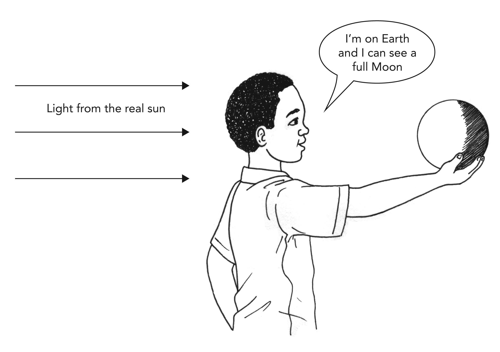

How can we find out what the surface of the Moon is like?
Features of the Moon
surface
weight
kilometre
gravity
spacecraft
astronauts
crater
helmet
radio
protective glass
temperature
Remember when we looked at the features of the Earth. Now, let's take a look at the features of the Moon. Let's go visit the Moon! You already built rockets in class. Now let's pretend that we are the astronauts on our rockets and we are going to explore the Moon.
The Moon is a ball of rock in Space
The Moon is very different to the Earth. The Moon is not a planet either! It is made of rock and it moves around the Earth in a circle. Remember how we spoke about the planets which orbit the Sun. The Moon does the same thing - it orbits around the Earth.
Full moon
The Moon has marks and shapes on it. What are those marks, do you think? \answerline{2}
Let the children discuss this and then write down their ideas. They are coming up with hypotheses. A hypothesis is a good guess, using the knowledge one has.
How could you find out what the marks on the face of the Moon are? \answerline{2}
We would have to go there and look at the surface of the Moon. For the teacher: tell the learners that we will be going there - at least in our imagination. We will have to build a rocket to get there.
Moon facts:
The Moon is 384 000 kilometres from Earth.
The Moon is made of rock and the surface is rock and grey sand.
The Moon has no air and no water.
The Moon is smaller than the Earth.
People weigh less on the Moon than on Earth because the force of gravity is less on the Moon.
The Sun is much further away from Earth than the Moon.
Exploring the Moon
In 1969, the rocket you see in the picture carried three men to the Moon for the first time. The rocket and spacecraft were called Apollo 11.
This picture shows the rocket blasting off and going up into Space. The rocket is as high as a 30-storey building.
The flame at the back is the hot gases coming out of the nozzle. The clouds on the side of the picture are the gases that hit the ground and blow dust sideways. The three men were called astronauts. They were in a small spacecraft on the nose of the rocket.
The big rocket burned up all its fuel and fell back to Earth, and landed in the sea. But the small spacecraft went on by itself to the Moon, and the astronauts were inside the spacecraft.
This is the spacecraft that went to the Moon and landed there.
Let us imagine that we are in that rocket!
We travel through Space at 5 800 kilometres in every hour. After three days' travel, we reach the Moon. We can see that the Moon is round, like a ball. We can see that the surface is rough, with mountains and many craters.
The surface is the outside of an object. You can rub your hand on the surface of your desk. A crater is a hole that was caused by something hitting a surface. If you throw a stone into sand, you make a crater in the sand.
First, let the children try to read this story for themselves. You can prepare them by doing the following.
Ask them to find these words and underline them:
surface (the ground is the surface of the Earth),
helmet (a structure that protects a person's head - worn by cyclists),
radio (a system like a cellphone),
crater (a hole in the ground),
protective glass (glass that stops the Sun harming your eyes), and
temperature (how hot or cold something is).
Then explain the meaning of the words to the learners.
If you decide to read the story to the learners, then pause at each of these words, and ask the class to read the word aloud. This does two things: it helps them learn the new word in its context, and it lets you know that they are following in the text.
What do we find on the Moon?
Read this story, or listen while your teacher reads it aloud:
The spacecraft goes down slowly to the Moon's surface, blowing out a big cloud of dust. There is no air on the Moon, and so the dust quickly falls back to the ground. We put on our spacesuits. We have air in tanks to breathe, radios to talk to each other and special glass helmets to protect our eyes from the Sun.
An astronaut in his spacesuit walking on the Moon.
The ground under our feet is grey sand, dust and small rocks.
The craters that we saw are big holes in the surface of the Moon. Rocks that travel very fast through Space sometimes smash into the Moon. In the places where the rocks hit, they make a hole and a ring of sand.
The sky is black, not blue. We can see the stars and the Sun at the same time. The Sun is bright, much brighter than on Earth, and we are glad we have protective glass in our helmets.
As we walk around on the Moon, the temperature of the ground is hotter than boiling water. But if we stop in the shade of a big rock or the spacecraft, the temperature is much colder than ice. The temperature changes so much because the Moon has no air. On Earth, the air keeps the Earth's surface from getting too hot or too cold.
I am an astronaut on the Moon
QUESTIONS:
Why is the astronaut in the picture wearing a glass mask that covers his whole face? Could he just wear dark glasses? \answerline{2}
No. The glass mask also keeps the air in his suit.
He is carrying the big pack on his back. Think of three things that are in the pack. You can work out the answers by discussing the story. \answerline{2}
Water, air, batteries, radio and a fridge system to keep him cool. Don't let the learners try guessing the answers; teach them to make inferences from the story they just read.
The sand on the Moon appears to have a light colour. Why does the Moon give us light at night? \answerline{3}
The sand does not make its own light. The Moon is like a grey wall with the Sun shining on it. The grey wall lights up a dark room.
Make a drawing of yourself on the Moon. Write a heading for your picture: This picture shows me on the Moon. Show the protective suit that you wear, and write labels for the parts of your protective suit. \answerspace{10}
This is the Earth seen from the surface of the Moon.
The phases of the Moon
phase
shape
waxing
waning
model
A phase is a period of time. For example, you are now in the Intermediate Phase at school. In Grade 7 you will be in the Senior Phase.
As the Moon orbits around the Earth, it appears as though the Moon is changing its shape in the sky. The Moon changes from a thin crescent to a full circle or disk (full moon) and then it shrinks back to a thin crescent again. It is then not visible for a few days again. These changes in the Moon's shape are called the Moon's phases.
Look at the diagram showing all the phases of the Moon.
The Moon moves in an orbit around the Earth. The Moon takes about 29\(\frac{1}{2}\) days to go all the way around and come back to the same position. This length of time is almost one month and so it takes almost one month from a full Moon to the next full Moon.
The Moon changes shape each night as the Earth is casting a shadow on the Moon. Depending on the position of the Moon, the Earth and the Sun, the Earth blocks the Sun's light from reaching the Moon and therefore casts a shadow. As the Moon moves around the Earth different shadows will be cast on the Moon from the Earth making it look like it is changing shape.
The Moon orbits the Earth once every 29 \(\frac{1}{2}\) days.
Why does the Moon change shape during the month?
The Sun shines on the Moon but there is always a part of the Moon that the Sun cannot reach. We can see the part that has sunlight on it, but we cannot see the dark part that is in shadow.
If you don't do this activity outside, then set up a big mirror to shine sunlight into the classroom.
Make a model of the Earth, Sun and Moon
This model will help you understand why the Moon's shape changes during the month.
MATERIALS:
a small ball to represent the Moon
a sunny day!
INSTRUCTIONS:
You must do this activity outside, early in the morning while the Sun is still low.
Begin with your back to the Sun.
Hold out your "Moon" in front of you, as you see in the following picture.
Your head is the Earth and your nose is Africa. You are looking from Africa. Which phase of the model Moon do you see?

How to hold the "Moon" with the Sun behind you.
Keep your arm stretched out and swing around until the model Moon is between you and the Sun. Now you see only the shadow side of your "Moon". You are seeing new moon.
Keep your arm stretched out and move the "Moon" to your right until a little sunlight shines on the side of the "Moon".
In case you are wondering, the learners move the ball (the "Moon") to their right because they are in the southern hemisphere.
Which shape of the Moon do you have now? Point to the pictures in the diagram showing the Moon phases.
Turn more to your right until half the Moon has light on it.
Which shape are you seeing now? Point to the picture in the diagram.
Turn your back to the Sun, so that you see light all over the side of the Moon. This is like 14 days passing.
Which shape of the Moon do you have now? Point to the pictures in the diagram.
Turn further to your right. Show your teacher how you can get the shape in the diagram. This is like 21 days passing
The Moon takes about 29\(\frac{1}{2}\) days to go around the Earth and come around to the same position it was in before.
QUESTIONS:
If it were new moon tonight, how many days will it take for the Moon to be full again? \answerline{1}
about 14 days
How many days will it take for the Moon to be a new moon again? \answerline{1}
29 \(\frac{1}{2}\) days from new moon to next new moon
Carry out the activity on the Moon watch while continuing with other work as it will take 1 month to complete. You may want to give them other sheets to take home to observe the Moon so that they do not have to take their workbooks home.
Observing the Moon's phases
MATERIALS:
pencil to draw
recording Sheet
INSTRUCTIONS:
Look at the Moon at the same time every night, for a month.
Write the date in the relevant block in the recording sheet below.
Make a drawing of the shape you see every night in the table below.
See if you can identify the name of the phase and write that in the block below your drawing.
If you cannot see the Moon due to bad weather, then write "Bad weather" in the block instead.
Recording sheet
Week 1
Mon
Tues
Wed
Thurs
Fri
Sat
Sun
Moon shape
Phase name
Week 2
Mon
Tues
Wed
Thurs
Fri
Sat
Sun
Moon shape
Phase name
Week 3
Mon
Tues
Wed
Thurs
Fri
Sat
Sun
Moon shape
Phase name
Week 4
Mon
Tues
Wed
Thurs
Fri
Sat
Sun
Moon shape
Phase name
Moon stories
Many cultures have different stories about the Moon. These stories tell us about the importance of the Moon in people's lives.
Here are some stories about the Moon from different cultures.
The Moon and the Hare
The hare and the Moon met at a waterhole one night. The hare washed his face with water. The water became still, like a mirror. He saw himself in the water and then he saw that the Moon was more beautiful than he was.
So the hare took mud from the side of the pool and he threw it on the Moon's face. You can still see the mud on the face of the Moon, if you look at the Moon tonight.
What do you think the people who told this story were looking at on the Moon when they described the "mud" on the Moon's face?
They might have been describing craters which appear darker.
Do you think it was right that the hare threw mud at the Moon? \answerline{2}
What emotion was the hare experiencing? \answerline{1}
jealousy
The Moon and the Sun
Encourage the learners to read this story for themselves. If they are not yet able to do this, do a pre-reading activity: ask them to find these words and underline them: burnt; fond; jealous, angry; reason; eclipse. Explain what these words mean. Then read the story aloud, pausing when you come to one of the underlined words. The learners must say the word aloud, so that you can check that they are following the text.
Once upon a time the Sun and the Moon were married and they had many children known as Stars.
The Sun was very fond of his children and he always wanted to hold them. But he was very hot and so the stars got burnt.
The stars did not like to be burnt and so they always ran away to hide when he came up into the sky. But the stars liked to be with their mother, the Moon, because she was the cool one. The Moon had markings on her face and she was beautiful.
This made the Sun very jealous, and he was angry with the Moon. So that is the reason why the Sun chases the Moon out of the sky. On some days you can see her in the daytime but the Sun almost never catches her.
There are times when the Moon comes between the Sun and the Earth, and we see the Sun go dark. These events are called eclipses of the Sun.
The Sun chasing the Moon across the sky.
In this story, who is the father, who is the mother, and who are the stars? \answerline{2}
The Sun is the father, the Moon is the mother, and the stars are the children.
In this story, what happens in the morning when the Sun comes up? \answerline{1}
The stars run away to hide in the morning.
How do you know that this story is not true? \answerline{2}
The Sun and Moon cannot get married; they cannot have children; the Sun does not have feelings like jealousy and anger. For the teacher: This story helps people remember what happens in the day and night sky, and people enjoy stories like this. However, science tells a different kind of story; science tries to explain things that happen by using science knowledge about the Sun and stars.
The story does help us remember some true facts. Name one of the true facts we get from the story. \answerline{2}
The Sun and the Moon move across the sky on almost the same paths; the full Moon sets in the west when the Sun comes up in the east; sometimes the Sun does go dark when the Moon passes in front of it.
Why are the Sun and the other stars hot? \answerline{2}
They are big balls of gas; one kind of gas is changing into another kind of gas and that is why they are so hot.
In the real sky, why do the stars disappear when the Sun comes up? \answerline{2}
The Sun is much brighter than the stars and so we cannot see the light from the stars, but they are still there in daytime.
In the real sky, can you ever see the Moon in daytime? \answerline{1}
Yes, some days you can see the Moon in the sky.
The Moon is a ball of rock.
It moves through Space and goes around the Earth.
It reflects light from the Sun onto the Earth.
The Moon has phases due to its position in relation to the Sun and the Earth.
What is the Moon made of? \answerline{1}
rock
Why does the Moon give us light at night? \answerline{2}
Sunlight shines on the Moon and some of it bounces back to Earth.
How many days must pass between a night when the Moon is full, and the next full moon? \answerline{1}
29 1/2 days
When we see a half-moon it looks like a letter D. Why can we see only half of the Moon? \answerline{2}
The other half of the Moon is not getting any light from the Sun and so no light comes from it to our eyes.
What do we call the changing pattern of shapes of the Moon during the month? \answerline{1}
Phases of the Moon
Arrange the Earth, the Sun and the Moon in order from biggest to smallest. \answerline{1}